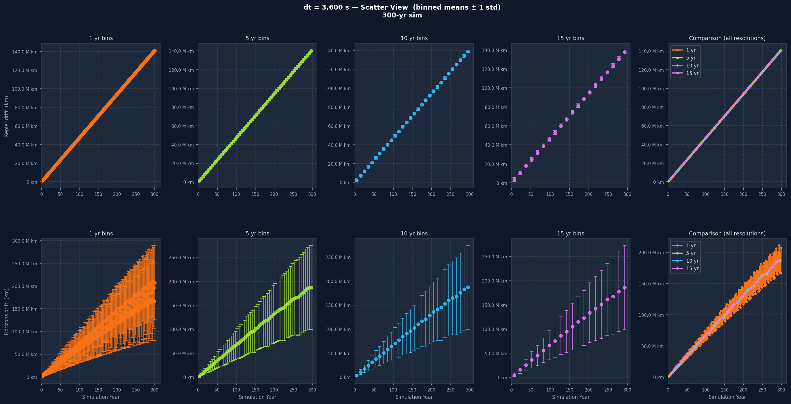
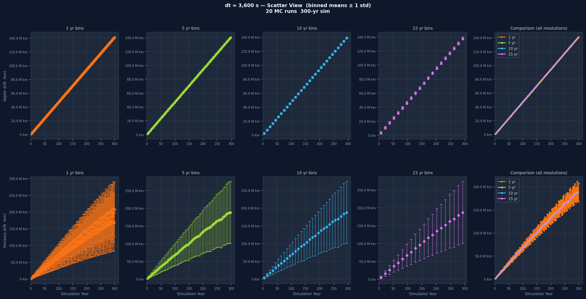
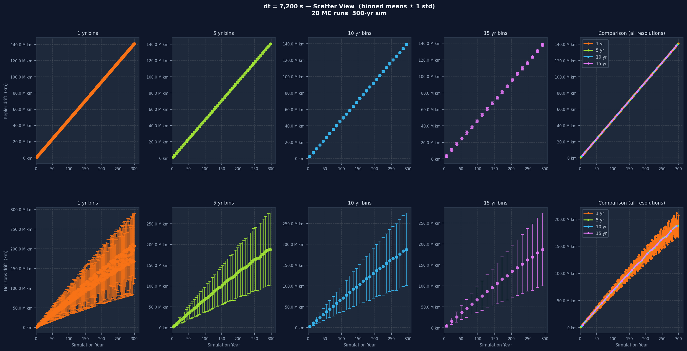
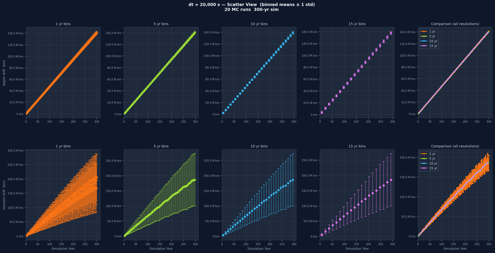
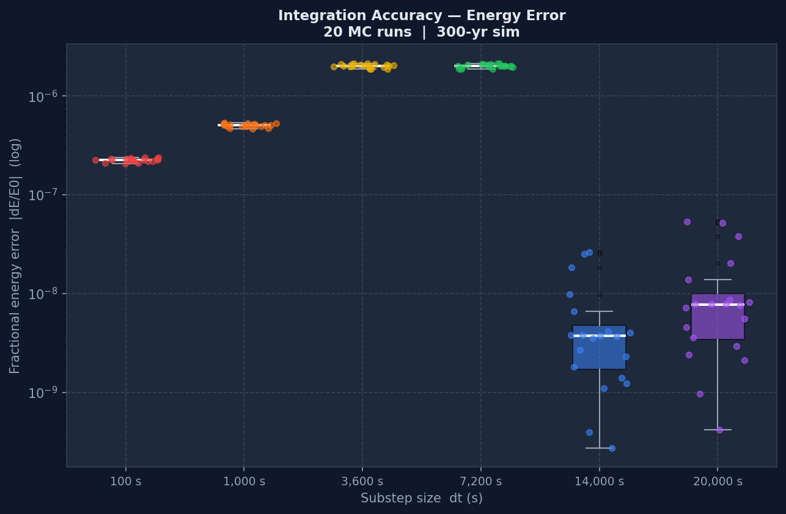

Final Report: Universal Digital Twin Engine
The Original Vision vs. What Actually Happened
Going into this project, I knew it was going to be a difficult one. The original plan for the Universal Digital Twin Engine was to create a simulation framework that could model complex cosmological systems with enough fidelity to actually be useful, bridging the gap between abstract theoretical physics and the Digital Twin models that engineering and industry work with. I understood it was an ambitious scope, but I don't think I fully grasped how immense the task actually was until I was already deep into it.
As the semester went on, the project shifted in focus. It became less about immediately building something massive and more about understanding what's actually sitting underneath all of that, the connective tissue between mathematics, computer science, and the way complex systems behave. This report covers what I built, the data I generated and analysed, and what I think I actually took away from the whole experience.
The Approach: Tools, Pivots, and Starting Small
The two biggest early decisions were about the implementation environment and the scope. I initially built in Unity using an Entity Component System architecture, but as the semester moved along it became too heavy to manage for what I was prototyping. I pivoted to raw JavaScript and HTML, which was self-contained, easy to iterate on, and let me focus on the orbital mechanics without fighting a game engine's overhead. It was the right call given the time I had.
On scope, the temptation was to go for the full solar system right away. But without a baseline I could actually verify against real data, adding more bodies would just multiply whatever errors I had until the output was meaningless. So I restricted the simulation to just two bodies, the Sun and Venus. Venus has a well-characterised orbit and NASA's JPL Horizons system provides high-quality ephemeris data for it over a very long time range, which meant I could run my simulation and directly compare its output, in kilometres, to what NASA's data says Venus's actual position should be at the same point in time. Only after showing that the Sun-Venus results were stable and mathematically reasonable did it make sense to think about scaling up.
How the Simulation Actually Works
The simulation uses a leapfrog integrator, sometimes called the Stormer-Verlet method. Instead of computing a full time step in one go, it splits into three parts: a half-step velocity kick based on current acceleration, a full position step using that updated velocity, then a force recompute and another half-step velocity kick. Leapfrog is symplectic, meaning it conserves the geometric structure of the equations of motion over long timescales, which for an orbital simulation means the total energy stays stable. A simpler Euler integrator would cause the orbit to spiral inward or outward from accumulated error alone. Leapfrog doesn't do that.
Light-delayed gravity is layered on top. When computing the gravitational force on Venus from the Sun, the code looks up where the Sun was at a retarded time, specifically the current simulation time minus the light-travel time across the current distance. This required maintaining a rolling history buffer of each body's position for the last 7,200 simulation seconds, updated every 3,600 seconds. Initial conditions for both bodies come from the NASA JPL Horizons API at epoch 1800-01-01, in the ecliptic plane (J2000), with positions in kilometres and velocities in kilometres per second. The simulation was run at six different time step sizes (dt): 100 s, 1,000 s, 3,600 s, 7,200 s, 14,000 s, and 20,000 s.
What Drift Is and How It's Calculated
Drift is the straight-line three-dimensional distance in kilometres between where the simulation places Venus and where a reference says Venus should actually be at that moment.
drift = sqrt( (sim_x - ref_x)^2 + (sim_y - ref_y)^2 + (sim_z - ref_z)^2 )This is recorded every 30 simulation-days throughout the run, which over a 300-year simulation gives roughly 3,652 data points per run. There are two separate drift measurements because they measure two different things.
Kepler Drift
Kepler Drift uses an analytic Kepler orbit as the reference, which is the mathematically exact solution to the two-body Newtonian problem. Given the initial relative position and velocity, the kepler_propagate() function computes exactly where Venus should be at any future time without numerically integrating anything. The drift between that analytic solution and the simulated position is:
kepler_drifts.append(math.sqrt(
(vx - (s0x + kx))**2 + (vy - (s0y + ky))**2 + (vz - (s0z + kz))**2
))This captures pure integration error from the leapfrog discretisation. If the integrator were perfect, this would stay at zero. In practice, integrating in discrete steps means approximating a continuous curve with straight segments, and the larger the time step the worse that approximation gets.
Horizons Drift
Horizons Drift uses the actual NASA JPL Horizons ephemeris as the reference, which accounts for General Relativity, all planetary perturbations, solar oblateness, and other real physical effects my simulation doesn't include. The Horizons data for Venus was pre-downloaded as a CSV at 17-minute resolution from 1800 to 2101. At each sample point the code interpolates from that cache and computes:
horiz_drifts.append(math.sqrt(
(vx - hv['x'])**2 + (vy - hv['y'])**2 + (vz - hv['z'])**2
))The Horizons drift is always larger than the Kepler drift because it captures both the integration error and the physical model gap on top of it. The gap between those two drift lines in the graphs is a direct measurement of what's missing from the physics model.
Binning for the Graphs
Plotting all 3,652 raw points directly produces an unreadable cloud of noise, so the data is aggregated into time bins before plotting. Each bin collects all sample points within that window, computes the mean and standard deviation, and the plot shows mean with plus or minus one standard deviation error bars. This is done at four bin widths: 1 year, 5 years, 10 years, and 15 years.
The Monte Carlo Approach
To check whether the simulation was genuinely stable and not just appearing stable for one specific set of initial conditions, each dt value was run not once but 20 times. Each run after the first applies a random perturbation to Venus's initial position (drawn from a normal distribution, standard deviation 100 km per axis) and initial velocity (standard deviation 0.001 km/s). The Sun is held fixed across all 20 runs. The result is 20 slightly different starting points for Venus, all within about 100 km of the true position, and you watch how drift evolves across all 20 trajectories. To keep the total run time manageable, those 20 runs per dt are dispatched in parallel across CPU cores using Python's ProcessPoolExecutor, so all 20 simulations for a given dt execute simultaneously rather than one after another, which made running 6 dt values times 20 runs each actually feasible.
If the integrator is well-behaved, those 20 trajectories should stay close together. A chaotic integrator or a dt that's too large would show trajectories diverging quickly and unpredictably. The standard deviation band around the mean in the MC plots captures that spread, and seeing it stay narrow is a concrete sign of stability.
Below, the same dt without perturbation (single baseline run) and then with 20 perturbed runs for direct comparison:


Reading the Graphs, dt by dt
Each individual drift plot is a grid: one row for Kepler drift, one for Horizons drift, five columns across. The first four columns show the data at 1-year, 5-year, 10-year, and 15-year bin widths. The fifth overlays all four without variance bands for direct resolution comparison. One-year bins show short-term variation clearly but can be noisy. Fifteen-year bins smooth almost everything and let the long-term trend stand out. Having all four together lets you separate real long-term trends from short-term noise that disappears when you zoom out.


Going from dt=100 s to dt=20,000 s, the Kepler drift grows noticeably faster. Smaller dt means each integration step is a better approximation of the orbit's continuous curve. Larger dt means bigger jumps and more curvature missed at every step, and past a certain point the error accumulates fast enough that the simulation stops being a useful model of the real orbit.
Accuracy vs Speed: What the Performance Data Shows
The other side of the dt choice is computational cost. The number of integration steps is the total simulation duration divided by dt, so running at dt=100 s takes 36 times as many steps as dt=3,600 s, and wall-clock time scales accordingly.

The boxplot shows the distribution of wall-clock times across all 20 Monte Carlo runs per dt. The trade-off is clear when viewed alongside the drift graphs: the smallest dt values give the lowest drift but take longest, the largest dt values run fast but the error grows to the point of uselessness. The middle range, around 3,600 to 7,200 seconds, is where a reasonable balance sits. The point isn't that one is objectively better, it's that the choice always depends on how much accuracy is needed and how much compute is available, and now there's actual data to make that call from instead of guessing.
What I Actually Took Away From This
The technical output of this project is a Sun-Venus orbital simulation benchmarked across six time step configurations and 20 Monte Carlo runs each. But what I think I actually learned from building it is a different story, and honestly the one that feels more lasting.
Translating maths into code is its own discipline.
Going from a physics equation to a running program forced me to understand things about the maths that reading alone never would have. When you implement a leapfrog integrator, you have to understand why it's symplectic and why that matters, not just what the update rule looks like. When you implement light-delayed gravity, you have to think about what historical data to keep, how often to update it, and what the memory cost is. The choice of dt stopped being an abstract parameter and became a concrete question about how well a sequence of straight-line segments approximates a curve, which is something you can feel in the data when you get it wrong. The maths became real when I had to make it run, and I don't think I could have gotten that understanding any other way.
You have to build tools to evaluate your own work.
This was probably the thing I didn't fully appreciate before this project. Initially I had no way of knowing whether the simulation was actually good. It might look right visually on a canvas, but orbital mechanics over a 300-year baseline can't be evaluated by eye. I had to write the Python benchmarking scripts separately, set up the comparison against the analytic Kepler solution, download and cache the NASA Horizons data, and build the graphing pipeline before I could say anything meaningful about what the simulation was doing. That process of building external validation infrastructure for your own work is something I think applies way beyond this specific project. You can't trust a system to tell you if it's right from the inside, you have to build the thing that evaluates it from the outside.
Taking things one step at a time is harder than it sounds, and the payoff is real.
Restricting the simulation to Sun-Venus when the goal was eventually a full solar system felt like giving up ground. But without that baseline I could actually verify, adding more bodies would have just compounded whatever errors were already there. The discipline of insisting on a foundation before building on top of it is something that's easy to understand in theory and genuinely difficult to do in practice, especially when the bigger picture is what you're excited about. And the payoff was that once I had the baseline, I actually knew what I was talking about when I made a claim about the simulation's accuracy.
Performance and complexity thinking became concrete.
I understood big-O analysis as an abstract idea before this, but building something where the wrong architectural choice had an actual measurable cost made it feel different. Adding light-delayed gravity didn't just add a feature, it added a rolling history buffer with a defined size, updated on a defined interval, with a defined maximum lookback, and all of those choices had consequences for memory footprint and cache efficiency. Watching wall-clock time scale across six dt values over 20 runs gave me a visceral sense of what O(n) scaling actually looks like when n is the number of simulation steps. It's one thing to write it down and another thing to watch it happen.
Godel's incompleteness theorems stopped being abstract.
Working this closely with the limits of a deterministic numerical simulation gave me a perspective on this that I didn't expect. No matter how precise the maths was, the system couldn't fully describe reality without pulling in things from outside itself. My simulation couldn't model Venus's orbit completely without accounting for Jupiter. Accounting for Jupiter would mean accounting for Saturn, and even then you're ignoring General Relativity. The gap between the Kepler drift and the Horizons drift in the graphs is a literal measurement of what's outside the system and can't be closed from within it. That gap is always there, and you can improve it, but you can never eliminate it by working within the same framework. Seeing that as a number, in kilometres, over centuries, made Godel's idea feel like something real rather than something I'd read about. The theorem isn't just a statement about formal logic, it describes a pattern that shows up anywhere you try to model a complex system from within a simpler one.
It changed how I think about AI.
The Godel connection led directly here. Most of modern AI is trying to recreate the function of a brain by training massive neural networks on massive datasets and assuming the right patterns emerge. But we don't actually understand why the brain works the way it does at a fundamental level, and there's something genuinely uncomfortable about trying to simulate a system we don't understand by building a different system we also don't fully understand and calling it a model. The same way my simulation couldn't close its gap with real physics without external physics it didn't have, I think neural networks might have a ceiling they can't push through without something that comes from outside what they currently are. I don't think the architecture we're building today is going to be the final form of AI, and working on this project is a big part of why I feel that way. The breakthrough, when it comes, is probably going to look like something we haven't thought of yet.
Understanding one subject deeply requires perspective from outside it.
The reason I couldn't understand my simulation's error by staring at the simulation was that I had to bring in Kepler's equations, NASA's empirical data, and an understanding of what physics my model was missing, all from outside the simulation itself. This is a lot like the NP-completeness result in computer science, where an efficient algorithm for one NP-complete problem could theoretically solve all of them, because all those problems are connected at a level that isn't obvious from looking at any one of them. Understanding something fully means connecting it to everything else, and I think that's the most general thing I've taken away from this. The answer to one lies with the answer to all, and you find it by looking across the edges of what you're studying, not deeper into the centre of it.
Wrapping Up
What I actually built was a two-body orbital simulation with light-delayed gravity, benchmarked against NASA's data across six time step configurations and 20 Monte Carlo runs per configuration. The gap between that and the original vision is pretty wide on paper, but to tell the truth I think what I took away from this was more valuable than what I originally planned to build. The technical skills, the analytical tools, the way of thinking about complexity and limitation, and the unexpected connections to ideas well outside this project, whether directly or indirectly, all of it had an effect and I don't think it's going away.